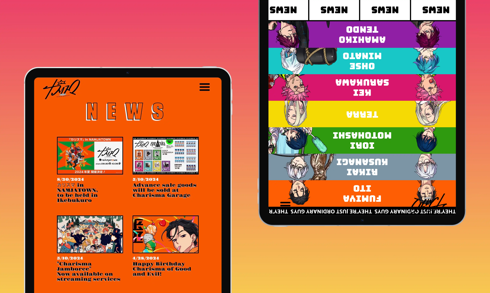
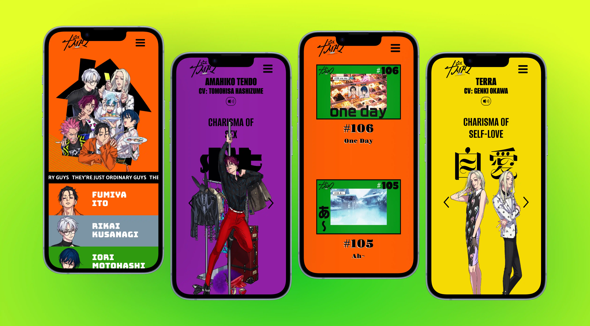
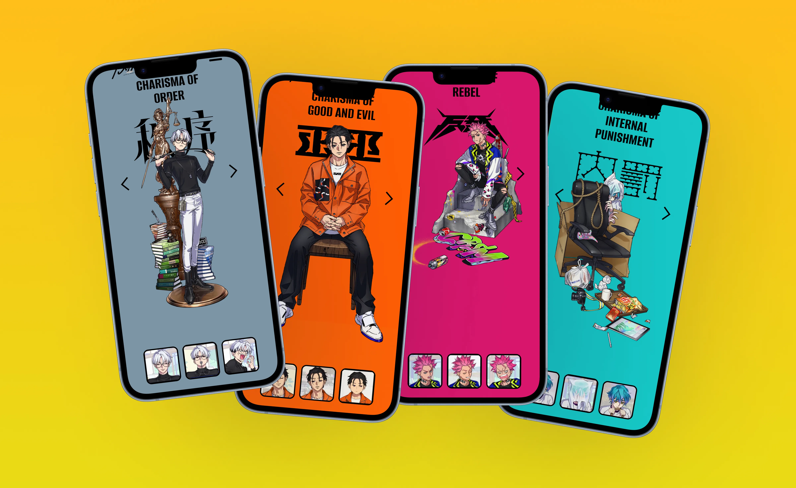
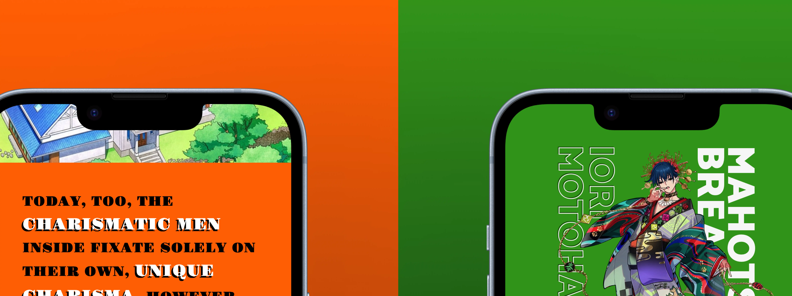

-
Charisma House Website Redesign
-
Web Design
-
Webflow, HTML, CSS, JavaScript
-
About
-
Charisma House is a Japanese music multimedia project by King Records. This is a full redesign of their web
presence, built in Webflow with custom JavaScript for interactions Webflow doesn't natively support.
-
The design started with low-fidelity Figma wireframes across desktop, tablet, and mobile before moving into
Webflow. Bold colors and eye-catching typography were chosen to match the project's flamboyant, spontaneous
energy — staying faithful to the existing brand while giving it a completely new visual register.
-
The site includes a landing page, individual character profiles with introductory voice lines, a news page,
episode releases, a merch store link, and a live Twitter feed.
-
View the live site!




